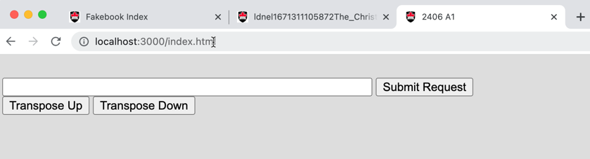
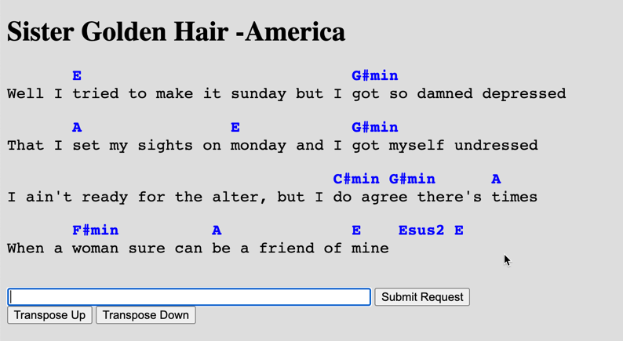
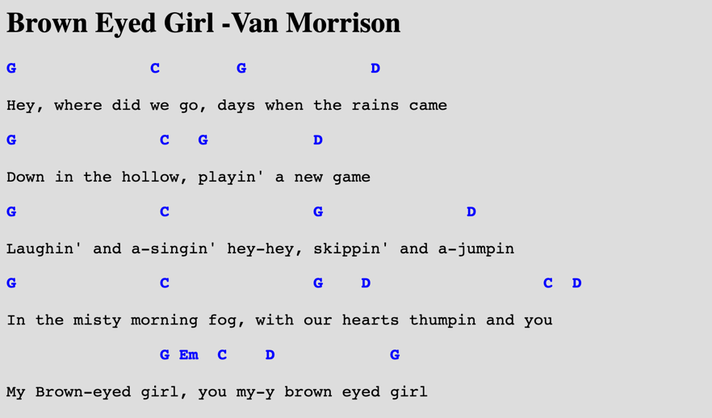
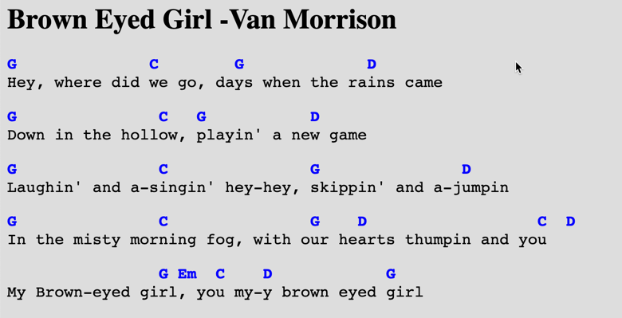

COMP 2406 A Winter 2024
Assignment 01:
Single-Page Client App
Due: Wed. Feb. 7 by 10:00pm submitted to brightspace
Revisions:
Revisions will be noted here; check periodically to see if assignment revisions have been posted.
Node.js/Javascript based Single Page App
In this assignment you are going build a small single-page web app that is based on just the native capabilties of javascript. Specifically you will build an app that allows a user to open a chord pro formatted (chords and lyrics) text files hosted on a node.js server and then within their browser properly display the chords above the lyrics and also allow users to transpose the chords up or down to a different musical key.
This assignment is based on the contents of tutorials 01 and 02. It is not a particularly difficult assignment but it will be challenging just because the material is new to you (by the end of the course this will seem more like just a tutorial exercise).
The components are:
Server: Built with just Node.js and only its built-in modules (e.g. http, path, fs, url) For this assignment use the supplied server. You will only be writting the client-side javascript that runs in the browser.
Client: Browser-based javascript and related html and css files.
Assignment Restrictions:
Technology Restrictions: You cannot modify the server.js code in this assignment.
Marking: This assignment is based on 17 design requirements numbered R1.1...R2.6 for a total of 34 marks.
Marks are awarded, or deducted, based on requirements as follows. Note: TAs will be running and evaluating your assignment code so we are not requesting a demonstration video for the four term assignments (only for the final project).
| Req Type | Assignment Grading |
|---|---|
| R0.x | Critical Submission and Intent Requirements. Assignment mark is 0 if any critical submission requirement (shown in red) is not fully met. |
| R0.x | Good Practice Requirements. You lose 2 marks for each good practice requirement (shown in amber) not met. |
| Rx.x | Design Requirements. You earn 2 marks for each design requirement (green) satisfied and well implemented; 1 mark if it's partly met or met but not well implemented; and 0 if it's not met or attempted. |
Critical Submission and Good Practice Requirements
The following requirements pertain to all your assignments regardless of what your application is supposed to do (i.e. regardless of the design requirements). These requirements are to ensure that your code is properly documented, readable, and maintainable.
R0.1 UNIQUENESS REQUIREMENT. The solution and code you submit must be unique. That is, it cannot be a copy of, or be too similar to, someone else's code, or other code found elsewhere. You are, however, free to use any code posted on our course website as part of your assignment solution. [Assignment mark is 0 if this requirement is not met.]
R0.2 README FILE: All of your submissions MUST include a README.txt. Your README.txt file is the first place the marking TA will look to evaluate your submission. If there is anything wrong with your README.txt file the marking stops and the grade is 0. Your README.txt MUST be complete and contain all of the following:
-
FILENAME and EXTENSION: The file name of your readme.txt file must start with the prefix "ReadMe" (not case sensitive) and the file must have an actual .txt extension. Other file extensions like .md, .html, .doc, etc. will not be accepted. The file contents must be plain text and not be in a markup language (e.g. html, or md, or xml etc.) or a programming or scripting language. [0 marks for the assignment if the filename, extension or format do not comply].
-
YOUR NAME, STUDENT NUMBER, and AFFIDAVIT: Your readme.txt file must contain the following affidavit statement signed using BOTH your name and student number. This is where you are identifying yourself and claiming to be the author of the work and the person who is to be credited for the work. [0 marks for assignment if any of the three items are missing, incorrect, or incomplete].
Affidavit:
"I attest to be begin the sole author of this summitted work and any code borrowed from other sources has been identified by comments placed in my submitted code.
YOUR_NAME, YOUR_STUDENT_NUMBER " -
INSTALL INSTRUCTIONS: Instructions on what actual commands to execute to install any external code modules needed to run your code. This will likely look like
npm installornpm install module_name.It must be a legitimate command that the marking TA can copy-paste-and-execute. The marker will attempt to execute your commands from a command terminal open on the directory that contains your server file. [0 marks for the assignment if the install command is missing, incorrect, or incomplete.] -
LAUNCH INSTRUCTIONS: Instructions on what command to execute to launch your app. e.g.
node server.js. As the course progresses there will be more launch options so it's important to provide the actual command. This must be a legitimate command that the marking TA can copy-paste-and-execute. The marker will attempt to execute your commands from a command terminal open on the directory that contains your server file. [0 marks for assignment if the launch command is missing, incorrect, or incomplete.] -
TESTING INSTRUCTIONS: Provide the acual URL you want the TA to visit with their Chrome browser to test your server. For example:http://localhost:3000/mytest.html?name=Louis
Pay attention to any specific URL's that must be supported by your app but you must supply an initial one in your README.txt file. If your app requires a userid/password to run then provide one here for the TA to use. You must supply an actual URL here and not just say something like "see output on server console". [0 marks for assignment if the URL is missing, incorrect, or incomplete.]
-
VIDEO DEMONSTRATION: Tutorials and the final term project assignment require that you post a YouTube video of you demonstrating that you have completed the required problems. In those cases you must provide the YouTube link in your ReadMe.txt file. You WILL NOT need a demonstration video for the 4 term assignments. The video link must be a valid YouTube link and viewable (i.e. not private) at the time of grading. Videos must be a proper screen capture video with sound narration. Filming your laptop screen with your phone will not be accepted. [0 marks for assignment if the YouTube video does not comply with these requirements.]
R0.3 CODE SUBMISSION, ORGANIZATION, AND COMPILATION: You must submit all the code files and data files necessary to compile and run your app. The code must at least compile without error and launch. The TA's will execute your app by following the instructions you provide in your README.txt file. You must submit a single.zip formatted file to brightspace. (not .rar or .tar or whatever; only .zip format is accepted). Though you can write code on Windows, Linux, or Mac OS the code must be generic enough to be OS agnostic. (See also the the requirement below about not submitting the node_modules directory). Your code must work with at least a current Chrome browser and version 18.x.x, or higher, of node.js [Assignment mark is 0 if this requirement is not met.]
R0.4 INTENT REQUIREMENT: The solution
and code you submit must comply with the intent of the assignment. For example if you are required to build a node.js/javascript server and you choose to build an apache/PHP server instead you will have violated the intent of the assignment even though the user input-output experience might be the same. As another example, if you are asked to build a "thick client" solution where the server just supplies data and the browser renders it but you build a "thin client" solution where the server renders all the HTML pages you will have violated the intent even though the user's experience would look the same.
[Assignment mark is 0 if this requirement is not met.]
R0.5 VARIABLE AND FUNCTION NAMES: All of your variables and functions should have meaningful names that reflect their purpose. Don't do what they do in math courses where they say things like: "let x be the number of customers and let y be the number of products...". Instead call your variables numberOfCustomers or numberOfProducts. Your program should not have any variables called "x" unless there is a good reason for them to be called "x". (One exception: it's OK to call simple for-loop counters i,j and k etc. when the context is clear and VERY localized.) Remember, javascript variables don't have types that can help clarify their meaning so choosing good names is even more important. Many functions in javascript are annonymous (have no name) and so the names of variables that refer to them should be well chosen.
Remember: any fool can write code that a computer will understand; the goal is to write code that we can understand. [Minus 2 marks from assignment if this requirement is not met.]
R0.6 JAVASCRIPT IN STATIC HTML: Your static html pages should NOT make direct reference to javascript functions. Don't do something like the following:
<button type="button" onclick="myFunction()">Try it</button>
Instead do something like this:
<button type="button" id="submit_button">Try it</button>
and elsewhere in your .js javascript file say:
document.getElementById('submit_button').addEventListener('click', myFunction)
[Minus 2 marks from assignment if this requirement is not met.]
R0.7 COMMENTS: Comments in your code must coincide with what the code actually does. It is a common bug to modify or cut-and-paste code and forget to modify the comments and so you end up with comments that say one thing and code that actually does another. Don't over-comment your code - instead choose good variable names and function names that make the code "self commenting". Don't be reluctant to create local variables so that the name of the variable helps to provide clarity -there is no prize for having the fewest lines of code. [Minus 2 marks from assignment if this requirement is not met.]
R0.8 MODULARIZATION: Your client-side and server-side javascript should not be in two giant files. Break you client-side javascript into smaller manageable and readable files and include them individually with <script> tags in your html document. On the server-side use requires or imports appropriately to organize your code into managable size files. [Minus 2 marks from assignment if this requirement is not met.]
R0.9 BLOATED CODE: If your assigment uses external modules installed with npm, DON'T submit the node_modules directory with your code (it's potentially huge). Remove that directory and only submit the package.json and package-lock.json files. The TAs will use these files to install the required modules using the instructions in your readme.txt file. NPM modules are platform specific and must be reinstalled on the marker's platform. [Minus 2 marks from assignment if this requirement is not met.]
R0.10 CITATION REQUIREMENT: If you use code from other sources you must cite the source in comments that appear in your code. If the source is an online website then put the URL in the comments. You may use bits of code from outside sources but this may not form the complete solution you are handing in. You DON'T have to cite demo code we provide on the course web site or with tutorials and assignments, however that code should not be used for things you post publicly (like on GitHub). [Minus 2 marks from assignment if this requirement is not met.]
VERY IMPORTANT: Any sample code provided may have bugs although none have been put there intentionally. You must be prepared to find errors in both the requirements and sample code. Please report errors so they can be fixed and an assignment revision posted.
Application Design Requirements
Background
It is intended that you will likely use your tutorial 02 code, or our tutorial 02 answer code, as your starting point for this assignment.
In tutorial 02 you did an exercise to decompose a string consisting of both chords and lyrics into individual strings consisting of only chords and only lyrics with the intent that the chords get displayed properly above he lyrics. You will also have "rendered" chords and lyrics as html elements on the client-side webpage.
For this assignment we want to display chords and lyrics as intended with chords appearing above the lyrics by rendering them as html elements on the client webpage. Below is an example of a chord pro formatted text file. The file format represents the lyrics, or words, of a song with chord symbols embedded within the lyrics in [] brackets . This format is convenient for storage because the chords always stay in the correct relative position with the lyrics because they are imbedded within the lyrics.
Chord Pro Text File:
{title: Sister Golden Hair -America}
verse1:
Well i [E]tried to make it sunday but i [G#min]got so damned depressed
That i [A]set my sights on [E]monday and i [G#min]got myself undressed
I ain't ready for the alter, but i [C#min]do [G#min]believe there's [A]times
When a [F#min]woman sure can [A]be a friend of [E]mine [Esus2] [E]
verse2:
Well i [E]keep on thinkin bout you sister[G#min] golden hair surprise
That i just can't live without you can't you [G#min]see it in my eyes
I've been [A]one poor corre[F#min]spondent, i've been [C#min]too too [G#min]hard to [A]find
But it [F#min]doesn't mean you [A]ain't been on my [E mind [Esus2] [E]
chorus:
Will you [B]meet me in the middle will you [A]meet me in the [E]end
Will you [B]love me just a little just en[A]ough to show you [E]care
Well i [F#min]tried to fake it i [G#min]don't mind sayin i [A]just can't make it
Notice the title of the song is within a {title: } bracket syntax. We want you to build a single-age app to properly display the chords and lyrics in a browser web page. Moreover, once displayed, the user should be able to transpose the music to another key. The assignment is based on the example code from tutorial 02 and the debugging techniques dissussed in tutorial 01.
1) Server-Side Requirements
R0.4 The server code is provided for you with this assignment. You should not modify this code. The TA should be able to test your code with their own copy of the server which may well include new songs not provided with the demonstration code. Here are some properties of the server code provided with this assignment.
The server has a songs directory of chord pro formated text files. The server allows a client to access the songs with a browser. For this assignment the user is required to type the song title exactly. A more general and elegant solution might allow the matching to be more general (e.g. not case sensitive, not sensitive to white space etc.).
Server is hosted on port 3000 and reachable from a browser on the same machine visiting http://localhost:3000/index.html Expect that we will be adding more songs to the songs directory of the server when we test your code. That is, your code should not work with just the songs in the demo code.
Note the server prints to its console the URLs that could be visited by the browser to demonstrate the app. We will ask you to do this too for the servers that you write in this course but ALWAYS provide one URL for us to test in your README.txt file that must accompany the assignment.

Client-Side Webapp Requirements
(Note: see the YouTube demonstration video at the end of the requirements below.)
R1.1 When the client visits the application URL http://localhost:3000/index.html the resulting webpage should have a text input field and a "Submit Request", button a "Transpose Up" button and a "Transpose Down" button and may look something like the following (you can modify the layout slightly if you want):

R1.2 The client should be able to request a song from the server by typing the song title in the text field and clicking the "Submit Request" button. If the song is available on the server the downloaded song should be displayed for the client as html content like the following.

R1.3 The title of the song should be displayed as an html <h1> heading element. The title of the song is identified in chord pro format by having it in {title: } brackets. You may colour the title if you want to but that is optional. Any colouring must be implemented with CSS styles. You can also choose whatever font you want for the title.
R1.4 The lyrics and chords shown on the webpage should have the lyrics in black and the chords in blue. The colouring should be implemented using CSS styles.
R1.5 The lyrics and chords shown on the webpage should be in the same monospace font (e.g. courier font) but the chords should be in bold style and the lyrics in normal (non-bold) style.
R1.6 The chords should be properly positioned above the lyrics and MUST NOT be in square brackets as they are in the chord pro formatted data provided by the server. (The first character of a chord should be positioned over the character following the chord's closing "]" bracket in the chord pro file- see image above.)
HINT: if your chords are represented as seperate lines of text with blanks used to space them out you should probably use <pre></pre> tags (preformatted text) rather than <p></p> since the paragraph <p> tags won't preserve the white space. Check on W3Schools for the difference between the two html tag types.
R1.7 The chords should appear to be directly above the intended lyric line and not just inbetween two lyric lines. For example, the line spacing in the first image below would be considered wrong but the spacing in the second image correct.
Wrong (chords not directly above intended lyric line):

Correct (chords directly above intended lyrics line.

R1.8 If chords are embedded inside a word in the chord pro format then the chord should appear above the word and not have the word split. For example, if the chord pro data looks like dep[G#min]ressed. Then the page should display it like this this:
G#mim depressed
and not like this:
G#mim dep ressed
Note in the "Sister Golden Hair" image above there is one area where there does not appear to be enough space to represent the chords over the text in their intended position (e.g. the C#minG#min chords). You can resolve this spacing dilema however you want.
R1.9 There should not be extra, unecessary, white space added that is not implied by the chord pro file. That is, there should not be extra blanks between words or extra white space lines. In particular the chords should appear directly above the words without an extra "blank line" between them. One exception: if there is not enough room to put the chords in their intended position (e.g. the C#minG#min chords in "Sister Golden Hair") one option could be to add some white space.
R1.10 You should be able to handle songs that have lines with chords but no lyrics (e.g. the intro of "Peaceful Easy Feeling"). You should also be able to handle a line of lyrics that has no chords.
R1.11 If the client requests a song from the server that does not exist the webpage should appear blank with only the buttons and text field. The code should not crash as a result of a client requesting a non-existing song. Also, we should be able to add new songs to the songs directory while your server is running. That is, there should be nothing in the code that hard-codes an intended list of available songs.
Transposition Requirements
Musicians often need to transpose the chords of a song to another key. That is, transpose the chords up or down by a certain number of semi-tones (or half-steps). You will implement this feature and make it available using the transpose buttons on the webpage.
R2.1 If the user presses the "Transpose Up" button the chords should be transposed up one semitone (or half-step) as they say in music. That is, an Am7 chord should be become A#m7 (or Bbm7), F#7 should become G7, Ebmin should become Emin etc. (see below for more explanation of what chord transposition means.)
R2.2 If the user presses the "Transpose Down" button the chords should be transposed down one semitone (or half-step) as they say in music. That is, an Am7 chord should be become Abm7 (or G#m7), F#7 should become F7, Ebmin should become Dmin etc. (see below for more explanation of what chord transposition means, and be prepared to google for more understanding.)
R2.3 Transposition should work correctly for slash chords. Slash chords have two letter names in them -they end in a / followed by a second letter name. For example an A7/C# chord. Here both the "A" and "C#" letter names appear within the same chord. It means the musician should play an A7 chord but with a C# note in the bass. The example song "Never My Love" contains some slash chords.
R2.4 When transposing, the chords of the orignal key should be shown in blue but if the chords have been transposed away from the original key they should appear in green. That way if the user is transposing up and down they will always recognize when they are back at the original key by the colour of the chords. So again: use a green font colour to show any transposed chords and a blue colour to show chords of the original key. -See the demonstration video below for an example of how this works. (If a note, or chord, is transposed up or down 12 semitones it is considered to be back at the original key.)
R2.5 When transposing, the chords of the orignal key should be shown in normal (non-italic) style but if the chords have been transposed away from the original key they should appear in italic style. That way if the chart were to be printed in black and white the reader could still tell by the font style whether the chords have been transposed or not.
R2.6 When transposing the chords of the orignal key should always appear with their original spelling. That is, if a chord was originally a Gbm7 and after transposition returns to the original key it should again be spelled as a Gbm7 and not an F#m7. (If a note is transposed up or down 12 semitones it is considered to be back at the original key.)
Transposition Explained
Here is an explanation of how chords are transposed but you should google this concept if you need more clarification -remember a programer will always need to learn some of the domain that the app is about in order to understand the requirements and write the code.
In western music there are 12 notes whose names are A, A# or Bb, B, C, C# or Db, D, D# or Eb, E, F, F# or Gb, G, G# or Ab. Moving from one note to the next one in this sequence is called a distance of a semitone (or a half-step). It's perhaps easiest to visualize these as a table or array.
| 0 | 1 | 2 | 3 | 4 | 5 | 6 | 7 | 8 | 9 | 10 | 11 |
|---|---|---|---|---|---|---|---|---|---|---|---|
| A | A# | B | C | C# | D | D# | E | F | F# | G | G# |
| A | Bb | B | C | Db | D | Eb | E | F | Gb | G | Ab |
Seven of the notes have simple letter names (A,B,C,D,E,F, or G) and five of the notes have two names: a sharp (#) or flat (b) name (A# = Bb, C# = Db, D# = Eb, F# = Gb, G# = Ab). Recall, if you will, Albert Einstein's most famous thereom: E = Fb.
To transpose a chord Dm7 up 4 semitones you would locate the chord's root name D in the table at index 5 and then look up the new root name at location 5 + 4 = 9. That is, Dm7 transposed up 4 semitones is F#m7. (If you end up going off the table you would wrap around to the start -i.e. do a mod 12 operation on the index sum.)
To transpose a chord Dbmaj down 6 semitones you would locate Db which is at index 4 then subtract 6 which would be -2 or 10 if we are wrapping around. Thus Dbmaj transposed down 6 semitones would be Gmaj.
Thus transposing up is moving to the right by the required number of semitones wrapping around if necessary. Transposing down is moving to the left by the required number of semitones wrapping around if necessary.
When chords are transposed only the note-name parts of the chord spelling changes. Other properties stay the same. For example Fsus4 chord transposed up a semitone could be a Gbsus4 chord. The "sus4" part stays the same. Be aware there are slash chords, like Fm7/Ab that have two note-name portions (the F and the Ab after the slash). Both note name portions would have to be transposed.
Demonstration Video
Here is a demonstration of the behaviour I'm asking you to build.
Additional Notes.
We've simplified the test song files provided so they only consist of one verse or chorus of text. That is sufficient for the assignment -you don't need to use long files of entire songs.